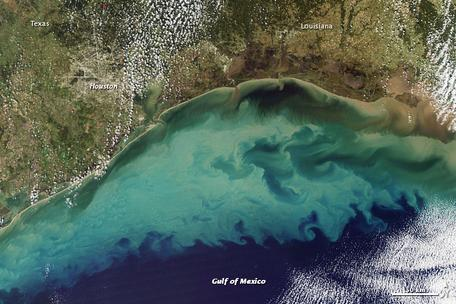

The Dying Oceans
Our oceans contain immense resources and animals. They are huge, encompassing 70% of the Earth's surface. In fact, we have explored more of the moon's surface than the floor of the oceans. Even though the ocean is huge, it is also fragile, containing delicate ecosystems that need proper balance in order to continue. Because of this, chemical disturbances lead to massive distrubances below the surface that negatively affect the whole ocean. In farms near bodies of water, chemicals that are used on crops such as pesticides make their way into the water via run-off and have gone into the Gulf of Mexico, lowering oxygen levels and killing ecosystems in the oceans. These are called "ocean dead zones", and are directly caused by farming materials used in fast fashion.
Not many people know that a lot of our clothes are made from plastic. When these clothes are washed, thousands of plastic fibers go through the drains and end up in the oceans. They are also less than 1/5 of an inch long, allowing them to slip through the filters at treatment plants.

Fast fashion accounts for more than a third of ocean microplastics. If you don't know yet, the problem with microplastics in the ocean is that marine animals mistake them for food and ingest them. These have catastrophic effects on the animals, and destroys fragile ecosystems. For example, if a fish ingests a toxin from the plastics, it could end up getting into the human body and cause illness if the human eats the fish. All in all, it is becoming more and more important to pay attention to what clothes you buy and where you are buying them from.